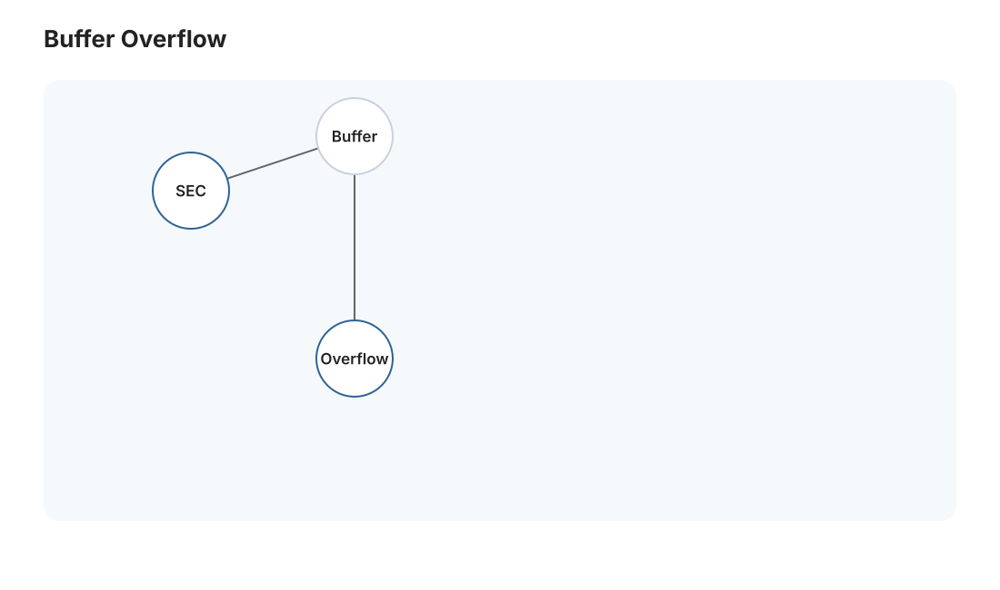
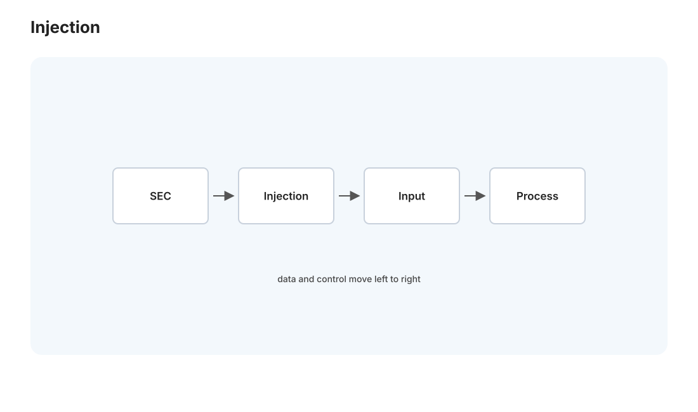
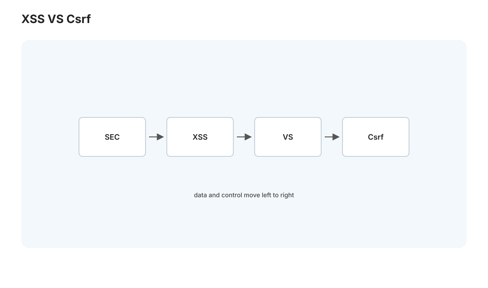

本页目录
安全 I · 系统与 Web 攻防
对标：Stanford CS155 / MIT 6.858 / OWASP Top 10 ｜ 前置：csapp-01/04（内存）、web 线、db 线、crypto 线 安全课的教学立场很明确——理解攻击是为了构建防御。这一页按"漏洞类别 + 其防御"的方式，讲清最常见、最重要的几类安全问题（内存安全、注入、XSS、CSRF、认证缺陷），每类都是"机理 → 为什么危险 → 怎么防"。这是防御性的知识：一个不懂这些攻击面的开发者，会无意中写出满是漏洞的代码。核心心法一句话：永远不要信任来自外部的输入。
学习层：哪一个信任边界让数据变成了代码？
1. 具体谜题：四条输入路径，四种不同的防线
系统收到四种输入：搜索框的查询值、评论正文、跨站表单和 URL 中的资源 id。每条输入都来自不可信主体，但它们穿越的解释器和授权边界不同。先预测：
- 哪一条路径需要参数化查询，哪一条需要输出编码？
- 仅有
HttpOnlycookie 能否阻止 CSRF？仅隐藏前端按钮能否阻止越权？ - 哪一条防线失效时，数据会跨入 SQL、浏览器脚本或对象授权的可信区域？
实验台只使用安全的标签化输入，不执行任何攻击载荷；它展示输入源、解释器、信任边界、阻断控制和最终 sink。先按边界预测漏洞类别与防御，再观察去掉一层防御后影响如何传播。
2. 最小模型：不可信数据穿越解释器或授权检查
把一条数据流写为
其中 U 是不可信输入，T 是被约束的数据表示，S 是 SQL、DOM、状态变更或资源对象。若输入在没有控制的情况下被解释器重新解析，代码/数据边界就被跨越；若资源 id 在没有服务端授权检查的情况下触达对象，身份/权限边界就被跨越。
3. 正式机制与不变量：防御要对应实际边界
- 代码/数据不变量：参数化 API 保持查询结构与值分离；输出编码让评论保持文本；模板/命令 API 不能靠黑名单猜完所有语法。
- 浏览器会话不变量：XSS 关注恶意代码在目标 origin 执行；CSRF 关注浏览器自动携带登录态发出非本意状态变更。
HttpOnly、CSP、SameSite 和 CSRF token 作用不同，不能互换。 - 授权不变量：每次服务端读取或写入资源都要依据当前身份和资源所有权/角色检查；前端隐藏控件不是安全边界。
- 纵深不变量：输入校验、最小权限、内存安全、日志告警和隔离控制应叠加；单个框架默认值不能覆盖所有 sink。
攻击分类的价值在于定位边界，不在于背 OWASP 名称。一个系统可能同时存在 XSS、CSRF 和授权缺陷，修复一个并不会自动修复另两个。
4. 失败边界与迁移任务
实验不执行真实攻击、不代表具体框架版本的全部安全保证，也不覆盖旁路缓存、SSRF、竞态、供应链或物理侧信道。编码只保护它所覆盖的输出上下文；参数化只保护对应的查询接口；服务器授权检查还需要正确的租户和资源模型。
迁移任务：给 Medusa 的一个公网 endpoint 画数据流图，标出浏览器、边缘、FastAPI、数据库和日志的信任边界；为每个跨界点写输入校验、输出编码、参数化、认证、授权、CSRF/CSP 或隔离控制，并注明哪一个控制失效时仍有哪些保护。
JavaScript 失效时的静态读法：先定位输入跨入的解释器/授权对象，再选控制；四个场景不是同一道“安全常识题”。
| 输入场景 | 关键边界 | 首要控制 | 控制缺失时的 sink |
|---|---|---|---|
| 搜索值进入 SQL 条件 | 数据 → SQL 结构 | 参数化查询 | 查询语义被改变 |
| 评论显示到页面 | 文本 → DOM/脚本上下文 | 输出编码/CSP | 浏览器执行不可信代码 |
| 跨站状态变更表单 | 外部 origin → 登录态操作 | CSRF token/SameSite | 非本意状态变更 |
| URL 资源 id | 身份 → 资源授权 | 服务端对象级授权 | 越权读取/修改 |
1. 安全的思维方式
普通开发问"怎么让它工作"，安全思维问"怎么让它出错、边界在哪、攻击者能控制什么"。三条基本原则贯穿全页：
- 不信任输入：一切来自外部（用户、网络、文件）的数据都可能是恶意的——必须校验、净化、限制（web-02 边界校验的安全动机）。
- 最小权限：每个组件只给完成任务所需的最小权限——出事时爆炸半径小。
- 纵深防御：不指望单一防线，多层叠加（一层被破还有下一层）。
2. 内存安全漏洞（系统层）

C/C++ 的内存 bug（csapp-04）不只是崩溃，是安全漏洞——攻击者可利用它控制程序：
- 缓冲区溢出：写超出缓冲区边界（csapp-01 数组无边界检查）→ 覆盖相邻内存。若覆盖了栈上的返回地址（csapp-03 函数调用），攻击者可让程序跳到他控制的代码——控制流劫持。这是几十年来最经典的漏洞类。
- use-after-free / 二次释放：访问已释放内存（csapp-04）→ 可被操纵。
- 为什么至今仍是大问题：内存安全漏洞占业界严重漏洞约 70%。
防御（层层叠加）：
- 语言层根治：用内存安全语言（Rust rust-01 的所有权、或带 GC 的语言 pl-02）——从源头消灭这一整类漏洞，这是本站语言线与安全线的关键呼应。
- 编译器/OS 缓解：栈保护（canary，检测返回地址被覆盖）、ASLR（地址随机化，让攻击者猜不到地址）、DEP/NX（数据页不可执行，防注入代码运行）——这些让利用变难，但不根治。
- 工具：AddressSanitizer/valgrind 开发期抓越界（csapp-04）。
- 纪律：边界检查、用安全的字符串/缓冲 API。
3. 注入攻击（Web 层最经典）

注入的通用机理：把用户输入当作代码/命令执行——当数据和代码的边界没守住时发生。
- SQL 注入：把用户输入直接拼进 SQL（db 线）→ 输入里的 SQL 片段被当查询执行，可绕过认证、读/改任意数据。根本原因是"用字符串拼接构造查询"。
- 防御（唯一正确解）——参数化查询 / 预编译语句：把 SQL 结构和数据分开传给数据库（
WHERE id = ?+ 单独传值），数据永远当数据、绝不当代码。ORM（web-02）默认用参数化，所以用好 ORM 天然防注入——但别用字符串拼接绕过它。永远不要用字符串拼接构造 SQL——这一条能防住绝大多数 SQL 注入。 - 命令注入 / 其他注入：把输入拼进 shell 命令、模板、LDAP 等同理——别把不可信输入拼进任何"会被解释执行"的字符串。用参数化 API、避免
shell=True拼接。
通用防御原则：数据与代码分离 + 输入校验（白名单优于黑名单）+ 输出编码。注入类漏洞的共同解药都是"别让数据越界变成代码"。
4. 浏览器端攻击:XSS 与 CSRF

Web 前端（web-03）的两类经典攻击，机理正好相反：
XSS（跨站脚本）：攻击者让恶意脚本在受害者浏览器里执行——通常因为网站把用户输入未经转义地放进页面（如评论区存了 <script> 标签，别人看到就执行）。危害：偷 cookie/token（web-02 会话）、冒充用户操作。
- 防御：输出编码/转义（把用户内容当文本显示，不当 HTML/JS 解释——现代前端框架 React 默认转义，所以 web-03 的 React 天然抵御大部分 XSS，但
dangerouslySetInnerHTML会绕过要小心）；内容安全策略（CSP）（限制页面能执行哪些脚本）；cookie 设HttpOnly（JS 读不到，偷不走）。
CSRF（跨站请求伪造）：攻击者诱导已登录用户的浏览器向目标网站发出非本意的请求（利用浏览器自动带 cookie）——如诱导你点一个链接，偷偷用你的登录态转账。
- 防御：CSRF token（表单带一个服务器验证的随机 token，第三方站点拿不到）；cookie 设
SameSite（限制跨站带 cookie，现代浏览器默认，是最有效的缓解）；对改状态的操作用 POST 而非 GET（web-01 方法语义）。
读法：XSS 是"恶意代码进了你的页面"、CSRF 是"你的登录态被别的站利用"——理解这对区别，才能正确选防御（转义 vs token）。两者都源于 Web 的信任模型漏洞。
5. 认证与访问控制缺陷
- 认证缺陷：弱密码存储（明文/弱哈希——crypto-01 要求加盐 + 慢哈希 bcrypt/argon2）、会话固定、token 泄露/不过期。
- 访问控制缺陷（授权）：越权访问——改一下 URL 里的 id 就看到别人的数据（因为只认证了"你登录了"，没检查"这条数据是不是你的"）。这是 OWASP 排名第一的漏洞类，web-02 强调过"认证 ≠ 授权"正是防它。
- 防御：每个请求都在服务端检查"当前用户有权访问这个资源吗"（别信前端隐藏按钮就够——前端检查可绕过，授权必须在后端强制）。
6. 练习与要点
例 1（注入的边界思维） 看一段用字符串拼接构造 SQL 的代码，指出攻击者能怎么让输入越界成代码，然后改成参数化查询——理解"数据与代码分离"如何根治注入，不必真的去攻击任何系统，重点是学会识别这个反模式。
例 2（XSS vs CSRF 辨析） 给两个场景（评论区显示用户输入、一个自动提交的第三方表单），各判断是 XSS 还是 CSRF 风险、该用哪种防御——练"识别漏洞类别 → 选对防御"。
例 3（授权检查） 设计 Medusa 若加多用户后，"取某用户的数据"的端点该怎么在后端强制授权（不能只靠前端不显示）——把"认证 ≠ 授权、授权在后端"用到自己的系统设计。\(\blacksquare\)
下一页：安全 II——密钥、供应链与安全工程：把安全从"修漏洞"提升到"系统性的工程实践"——密钥管理、依赖供应链、以及安全左移。